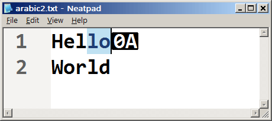
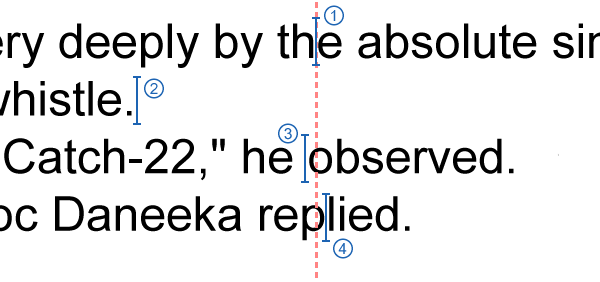

Keyboard Navigation
Uniscribeのテーマを継続することで、Neatpadの開発でまだ触れられていない次の分野、つまりキーボード入力にたどり着きます。Uniscribeがなければ、キーボードナビゲーションが非常に困難になることがわかっていたので、あえてこの段階を残しました。キーボード操作の問題は、キーボード入力をどう処理するかではなく（これは簡単です）、むしろUnicodeファイルの中をどうやってナビゲートするかにあります（結合配列、サロゲート、書記素クラスタなどを考慮に入れて）。
ここまでのところ、Uniscribe API はテキストレンダリングのサポートのために広く使用されてきました。幸いなことに、Uniscribe はテキスト出力以外にも使用することができます。ここでは ScriptBreak API と、それがキーボードナビゲーションの管理にどのように役立つかについて詳しく見ていきます。
Keyboard messages in Win32
すべてのWindowsプログラムは、WM_KEYDOWNメッセージとWM_KEYUPメッセージの形でキーボード入力を受け取ります。キーが押されると、一連のWM_KEYDOWNメッセージがアプリケーションのメッセージ・キューに送信され、キーが離されると、1つのWM_KEYUPメッセージが送信されます。これらの2つのメッセージは比較的「低レベル」ですが、これらを合わせて、Windowsのキーボード入力の基礎を形成しています。
| Key Pressed | Key Released | |
| Normal Keystroke | WM_KEYDOWN |
WM_KEYUP |
| System Keystroke | WM_SYSKEYDOWN |
WM_SYSKEYUP |
上の表は、2つの基本的なキーボード入力メッセージと、それらの「システム」対応メッセージであるWM_SYSKEYDOWNとWM_SYSKEYUPをまとめたものです。最後の2つのメッセージは、Windowsプログラムではほとんど使用されず、Neatpadの開発にも関係がないので、ここでは説明しません。
WM_KEYDOWNメッセージは、キーボードの特定のキーが押されたことを検出するために、アプリケーションで最もよく使われます。これは、
例えば、特定のキーの押下を処理する場合、文字のケースを判断する簡単な方法はありません。ユーザーは「A」というキーを押したかもしれませんが、これは小文字なのか大文字なのか？仮想キーストロークの「A」が入力されたことだけはわかっていますが、CAPSLOCKボタンの状態や、ユーザーがSHIFTキーを押していたかどうかについては何もわかりません。もちろん、実際に入力される文字は、これらの要因によって異なります。この単純なケースでは、「a」か「A」のどちらかになります。英語のキーボードだけでなく、UnicodeやInput Method Editors、システムロケールの領域になると、さらに複雑になります。
幸いなことに、Windowsには文字入力を処理する別のメカニズムがあります。それは、WM_CHARおよびWM_UNICHARメッセージです。これらのメッセージは、キーストロークではなく文字を表すことを特に意図しています。興味深いことに、キーボードでキーが押されても、WM_CHARは自動的にアプリケーションに送信されません。アプリケーションのメッセージループ内でTranslateMessage関数が呼ばれて初めて、WM_CHARメッセージがディスパッチされます。
while(GetMessage(&msg, 0, 0, 0) > 0)
{
TranslateMessage(&msg);
DispatchMessage(&msg);
}
上の図は、多くの Win32 プログラムの標準的なメッセージループです。ほとんどのプログラマは、このループをあまり気にせずにそのままコードにコピー＆ペーストしていると思いますが、特にTranslateMessage関数は非常に特殊な目的を持っています。この関数は、特定のメッセージ（WM_KEYDOWNなど）を一連の対応するWM_CHARメッセージに変換します。TranslateMessageは、SHIFTキーやCAPSLOCKキーの状態や、現在のロケールなどを考慮します。代わりに、新しいWM_CHARメッセージがTranslateMessageによって構築され、後続の処理のために現在のスレッドのメッセージ・キューにポストバックされます。
| Characters | Dead Characters | |
| UTF-16 Character | WM_CHAR |
WM_DEADCHAR |
| UTF-32 Character | WM_UNICHAR |
|
| Input Method Editor | WM_IME_CHAR |
|
| System Character | WM_SYSCHAR |
WM_DEADSYSCHAR |
今回の表は、Windowsプログラムで利用できる様々な文字入力メッセージをまとめたものです。実際にNeatpadにデータを入力するのは、この連載のかなり後の方になるので、これらのメッセージを今見ても意味がありません。
Keyboard Navigation with WM_KEYDOWN
このチュートリアルの目的は、キーボードナビゲーションの実装をカバーすることです。したがって、矢印キー、ページアップ、ページダウン、ホーム＆エンドなどの物理的なキーにのみ関心があります。実際の文字入力（およびWM_CHAR/WM_UNICHARメッセージ）は、このシリーズの後半で、実際にTextDocumentを変更する仕組みができるまで待つことにします。
一般的に、Windowsのテキストエディタにおけるキーボード操作はかなり一貫しています。矢印キー（左、右、上、下）は、テキストカーソルを4つの基本的な方向に移動させるために使用され、ページアップ、ページダウン、ホーム、エンドはすべて、それらが達成すべきことが確立されています。さらに、コントロールキーやシフトキーを押すことで、その時に押されているナビゲーションキーの動作を変更することができます。
以下の表は、Neatpadに実装する予定の行動をまとめたものです。
| Key Code | Normal Action | TextView Method | With <Control> | TextView Method |
| VK_LEFT | Character left | MoveCharPrev |
Word left | MoveWordPrev |
| VK_RIGHT | Character right | MoveCharNext |
Word right | MoveWordNext |
| VK_UP | Line up | MoveLineUp(1) |
Scroll line up | Scroll |
| VK_DOWN | Line down | MoveLineDown(1) |
Scroll line down | Scroll |
| VK_PRIOR | Page up | MoveLineUp(x) |
||
| VK_NEXT | Page down | MoveLineDown(x) |
||
| VK_HOME | Line start | MoveLineStart |
Document start | MoveFileStart |
| VK_END | Line end | MoveLineEnd |
Document end | MoveFileEnd |
各アクションは、関連する操作を実行するTextViewのメンバー関数で表されます。ご覧のように、実装しなければならないアクションの数は非常に多くなっています。これは、コントロールキーの影響で、実装しなければならないメソッドの数が2倍になっていることが原因です。
NeatpadのTextViewのWM_KEYDOWNハンドラを以下に示します。switch文を使って、興味のあるキーストロークをそれぞれ処理しています。
LONG TextView::OnKeyDown(UINT nKeyCode, UINT nFlags)
{
bool fCtrlDown = IsKeyPressed(VK_CONTROL);
switch(nKeyCode)
{
case VK_LEFT:
if(fCtrlDown) MoveWordPrev();
else MoveCharPrev();
break;
case VK_RIGHT:
...
}
<< extend selection if <shift> is held down >>
<< update text-caret position >>
}
MoveXxxx関数の目的は、m_nCursorOffset変数を更新して、現在のファイル内の新しい位置を参照することです。各MoveXxxx関数は、処理すべきキーボード操作に応じて、異なる方法でm_nCursorOffsetを調整します。ここでは、上記のスニペットから大まかなアイデアを得られることを期待して、関数全体は記載しません。
キー操作によってm_nCursorOffsetが更新されたら、次はテキスト選択の処理を行います。
// Extend selection if <shift> is down
if(IsKeyPressed(VK_SHIFT))
{
InvalidateRange(m_nSelectionEnd, m_nCursorOffset);
m_nSelectionEnd = m_nCursorOffset;
}
// Otherwise clear the selection
else
{
if(m_nSelectionStart != m_nSelectionEnd)
InvalidateRange(m_nSelectionStart, m_nSelectionEnd);
m_nSelectionEnd = m_nCursorOffset;
m_nSelectionStart = m_nCursorOffset;
}
テキストの選択範囲を広げるには、シフトキーの状態（アップ/ダウン）をチェックして、TextView変数m_nSelectionStartとm_nSelectionEndを適切に変更するだけです。選択範囲を広げる必要があるとき（シフトキーが下）は、m_nSelectionEnd変数だけが修正されます。それ以外の場合は、両方の変数が同じ値に更新され、効果的に選択を「ゼロ」にします。
最後のステップは、カーソルオフセットから物理的なキャレットの位置を更新することです。これは重要な概念で、キーボード操作中にキャレットの物理的な画面上の位置を考慮する必要はありません。すべてのキーボード操作は、主に1つの論理的な文字オフセットに基づいており、（キー操作によって）カーソルオフセットが更新された後にのみ、カレットの位置が変更されます。
// update text-caret location (xpos, line#) from the offset
UpdateCaretOffset(m_nCursorOffset, &m_nCaretPosX, &m_nCurrentLine);
UpdateCaretOffsetは、以前のチュートリアルでキャレットの位置を決めるために使われていたので（UspOffsetToXとSetCaretPos APIを使用）、この関数は単にキーボード処理に再利用されています。
Uniscribe のすべてのキーボード操作は、論理的なオフセットに基づいています。言い換えれば、カーソルは WCHAR 単位でバッキングストア（ファイル）を進みます。双方向文字列をナビゲートする場合、キャレットはファイルを論理的に進みます。Uniscribeが論理的なカーソルオフセットを画面上の物理的な位置に変換することに依存しています（ScriptCPtoX関数を使用）。このため、単一の矢印キーを使用していても、同じ文字列の中でカーソルが「左」と「右」の両方に移動しているように見えることがあります。双方向文字列でのキャレットの表示については心配ありません。Uniscribe を使用しているため、これらの詳細はすべて自動的に処理されます。
最後に、GetKeyState APIのシンプルなラッパーであるIsKeyPressed関数の使用に注目してください。この関数の目的は、キーが押されているかどうかのテストを単純化することであり、この事実を示すブール値を返します。
bool IsKeyPressed(UINT nVirtKey)
{
return GetKeyState(nVirtKey) < 0 ? true : false;
}
ScriptBreak
ScriptBreakはScriptItemizeと一緒に動作し、文字列内の各文字の論理的属性を特定します。ScriptBreakは、（ScriptItemizeによって特定された）文字列内の個々のアイテムランごとに1回呼び出す必要があり、SCRIPT_LOGATTR構造体の配列を返します。配列の各エントリは、Unicode文字列内の1つのWCHARを表しており、ラン内のWCHARの数と同じ数の要素を持つように、呼び出し元が割り当てなければなりません。
HRESULT WINAPI ScriptBreak (
WCHAR * pwcChars,
int cChars,
SCRIPT_ANALYSIS * psa,
SCRIPT_LOGATTR * psla
);
各キャラクターの個々の属性は、以下に示すSCRIPT_LOGATTR構造体に格納されています。
struct SCRIPT_LOGATTR
{
BYTE fSoftBreak : 1;
BYTE fWhiteSpace : 1;
BYTE fCharStop : 1;
BYTE fWordStop : 1;
BYTE fInvalid : 1;
BYTE fReserved : 3;
};
SCRIPT_LOGATTR構造体の各フィールドには特定の目的がありますが、ScriptBreakが返すこの情報は一般的に、ワードラッピングとキーボードナビゲーションの2つの目的に役立ちます。
- fSoftBreakは、文字列の中でワードラッピングが可能な位置、つまり複数行に渡って表示できるように文字列を分割できる位置を示します。
- fWhiteSpaceは、対応する文字をホワイトスペースとして処理することを示します。これは、タブやスペースだけでなく、もっと多くの文字に対して設定できる可能性があります。
- fCharStop and fWordStopは、文字列内の有効なキャレットの位置を特定します。これらの位置は、1文字ベースのナビゲーションや「ワード」ナビゲーションをサポートするために使用できます。
ScriptBreakが私たちに代わってどれだけの仕事をしてくれているか、過小評価しないでください。文字や単語の位置を特定してくれるだけで、私たちは膨大な労力を節約できます。さらに、ScriptBreak は Unicode のすべてのスクリプトをサポートしているので、タイ語のように「ソフトブレーク」を識別するための辞書を必要とする言語では、すべてのハードワークがすでに完了しているのです。
アイテムランごとに ScriptBreak を呼び出すタスクは、以前のチュートリアルで見た UspAnalyze 関数が担当します。SCRIPT_LOGATTR バッファは、USPDATA オブジェクトの breakList * メンバ内に割り当てられて保存されます。そして、単純なループを使用して各アイテムランを反復し、ScriptBreakの結果をUSPDATA::breakList配列に格納します。この配列は、すべてのアイテムランの結果を連結したものです。
<< UspLib.c - UspAnalyze(...) >>
// allocate memory for SCRIPT_LOGATTR structures
uspData->breakList = malloc(wlen * sizeof(SCRIPT_LOGATTR));
// Generate the word-break information for each item-run
for(i = 0; i < uspData->itemRunCount; i++)
{
ITEM_RUN *itemRun = &uspData->itemRunList[i];
ScriptBreak(
wstr + itemRun->charPos,
itemRun->len,
&itemRun->analysis,
uspData->breakList + itemRun->charPos
);
}
UspAnalyzeで分析されたテキストの文字列(または段落)には、自動的にUSPDATAオブジェクト内に保存されたSCRIPT_LOGATTR情報があります。各ランの情報が同じバッファに連結されているため、文字列内の各文字の論理属性を検査する際に、個々のアイテムランを考慮する必要はありません。
簡単な例を見て、"Hello يُساوِي World" という文字列が ScriptBreak によってどのように扱われるかを見てみましょう。この文字列には、アラビア語のフレーズの両側に2つのスペースがあることに注意してください。
| SCRIPT_LOGATTR | H | E | L | L | O | ي | ُ | س | ا | و | ِ | ي | W | O | R | L | D | |||
| SoftBreak | 0 | 0 | 0 | 0 | 0 | 0 | 1 | 0 | 0 | 0 | 0 | 0 | 0 | 0 | 1 | 0 | 0 | 0 | 0 | |
| WhiteSpace | 0 | 0 | 0 | 0 | 0 | 1 | 0 | 0 | 0 | 0 | 0 | 0 | 0 | 1 | 0 | 0 | 0 | 0 | 0 | |
| SoftBreak | 0 | 0 | 0 | 0 | 0 | 0 | 1 | 0 | 0 | 0 | 0 | 0 | 0 | 0 | 1 | 0 | 0 | 0 | 0 | |
| CharStop | 1 | 1 | 1 | 1 | 1 | 1 | 1 | 0 | 1 | 1 | 1 | 0 | 1 | 1 | 1 | 1 | 1 | 1 | 1 | |
| WordStop | 0 | 0 | 0 | 0 | 0 | 0 | 1 | 0 | 0 | 0 | 0 | 0 | 0 | 0 | 1 | 0 | 0 | 0 | 0 | |
| Invalid | 0 | 0 | 0 | 0 | 0 | 0 | 0 | 0 | 0 | 0 | 0 | 0 | 0 | 0 | 0 | 0 | 0 | 0 | 0 |
Tabs and Whitespace
ScriptBreak はデフォルトではタブ文字をホワイトスペースとして認識しません。これが問題になります。なぜなら世界中のテキストエディターは、タブは基本的にスペースと同じであると理解しているので、同じように扱うべきだからです。この問題を解決するには、Unicode 文字列を解析してタブ文字を探し、breakList の対応するエントリを変更する必要があります。
for(i = 0; i < wlen; i++)
{
if(wstr[i] == '\t')
uspData->breakList[i].fWhiteSpace = TRUE;
}
上記のループはUspAnalyzeの中にあり、ScriptBreakの情報を取得した後に実行されます。
UspGetLogAttr
UspGetLogAttr という新しい UspLib 関数を導入しました。これは Script_pLogAttr 関数と似た概念の関数です。この関数は、各 USPDATA オブジェクト内の breakList バッファへのポインタを返します。この関数は、各 USPDATA オブジェクト内の breakList バッファへのポインタを返しますが、関数の呼び出し元が変更できる非constSCRIPT_LOGATTR 配列が返される点が異なります。
SCRIPT_LOGATTR * UspGetLogAttr( USPDATA * uspData )
{
return uspData->breakList;
}
ご覧のとおり、UspGetLogAttr 関数は非常にシンプルで、各 uspData オブジェクト内に保持されている breakList バッファへのポインタを返すだけです。もちろん、このバッファを構築するための実際の作業は、UspAnalyze関数によって行われました。
この関数が存在する理由は、呼び出し側が各USPDATAオブジェクト内の内部SCRIPT_LOGATTR構造を変更できるようにするためです。これは重要なことで、シンタックスハイライトに関しては、各行のSCRIPT_LOGATTRバッファを微調整して、より具体的な言語シンタックスの詳細に対応する必要があると考えています。
今のところ、UspGetLogAttr関数は、キーボードナビゲーション関数によって、テキストの各行内でのカーソルの配置を制御するためにのみ使用されています。
Character and Word navigation
文字ナビゲーションと単語ナビゲーションは互いに密接に関連しています。どちらも1行のテキストを操作するもので、ScriptBreakが返すSCRIPT_LOGATTRの情報を利用して、キャレットを有効な文字や単語の位置に配置します。
VOID TextView::MoveCharPrev()
{
USPCACHE * uspCache;
CSCRIPT_LOGATTR * logAttr;
ULONG lineOffset;
int charPos;
// get Uniscribe data for current line
uspCache = GetUspCache(0, m_nCurrentLine, &lineOffset);
logAttr = UspGetLogAttr(uspCache->uspData);
// get character-offset relative to start of line
charPos = m_nCursorOffset - lineOffset;
// find the previous valid character-position
for( --charPos; charPos >= 0; charPos--)
{
if(logAttr[charPos].fCharStop)
break;
}
<< move up to end-of-last line if necessary >>
// update cursor position
m_nCursorOffset = lineOffset + charPos;
}
MoveCharPrevは、まず、現在の行のキャッシュされたUspDataオブジェクトを取得し、UspGetLogAttrを呼び出すことにより、その行のSCRIPT_LOGATTR構造を取得します。その後、SCRIPT_LOGATTR配列が解析され、有効な文字停止位置が検出されます。UspDataオブジェクトは個々の行を表しているため、すべての処理は各行の開始点を基準としています。
// find the previous valid character-position
for( --charPos; charPos >= 0; charPos--)
{
if(logAttr[charPos].fCharStop)
break;
}
上のループはとてもシンプルです。文字の停止位置が見つかるまでループを続けているだけです。ループが終了すると、charPos変数が変更され、テキストキャレットの位置を変更することができます。
Word-navigation は少し複雑です。MoveWordNextのロジックは以下のようになっています。
// if already on a word-break, go to next char
if(logAttr[charPos].fWordStop)
charPos++;
// skip whole characters until we hit a word-break/more whitespace
for( ; charPos < uspCache->length_CRLF; charPos++)
{
if(logAttr[charPos].fWordStop || logAttr[charPos].fWhiteSpace)
break;
}
// skip trailing whitespace
while(charPos < uspCache->length_CRLF && logAttr[charPos].fWhiteSpace)
charPos++;
ここまででやっていることは、TextViewの論理的なカーソルオフセットを変更しているだけだということを覚えておいてください。実際のテキストカーソルは独立して配置されており、高度な処理を必要としません。これが、Uniscribeの素晴らしいところです。プログラマーとしては、論理的な文字単位を扱うだけでよく、複雑な表示関連のコードはすべて自動的に処理されます。
Line Wrapping
Neatpadで使用しているリニア（オフセットベース）の座標系のため、この段階は必要ないと思っていました。しかし、NeatpadがCR/LFシーケンスを処理する方法のため、カーソルが行頭/行末を越えたことを検出するために、特定のチェックを行う必要があります。これが発生すると、カーソルは前の行または次の行に移動します。
この問題は、テキストキャレットが各行末のCR/LFを越えて移動してはならないために起こります。事実上、CR/LFの配列は文字停止位置として使用できない「死」の文字です。下の画像は、行末にラインフィード文字があるにもかかわらず、カレットが到達できる最後の位置にあることを示しています。
">
前/次の行に折り返す作業は、MoveLineEndおよびMoveLineStart関数に任されています。そのため、MoveXxxxPrev関数の多くで以下のようなコードが見られます。
if(charPos < 0)
{
charPos = 0;
if(m_nCurrentLine > 0)
{
MoveLineEnd(m_nCurrentLine-1);
return;
}
}
...そして、対応するMoveXxxxNext関数に以下のコードを記述します。
if(charPos == uspCache->length_CRLF)
{
if(m_nCurrentLine + 1 < m_nLineCount)
MoveLineStart(m_nCurrentLine+1);
return;
}
SCRIPT_LOGATTR配列を使って、CR/LFシーケンスを「スキップ」することができればと思っていました。おそらく、ラインラッピングを処理するための最も良い方法を見つけたわけではないと思いますが、私は長い間これに取り組んできましたので、私が得たものを公開するつもりです。もし誰かが、追加の処理を必要としないラインラッピングの良い方法を提案してくれたら、ぜひ連絡してください...。
Line navigation and Anchoring
概念的には、ラインベースのナビゲーションは非常にシンプルです。表面的には、カーソルが指定された行数を上下に移動するために、カーソルの行数を調整するだけで済みます。しかし、可変幅のフォントをサポートする必要があるため、残念ながら実装はそれよりも若干複雑になります。
この問題は、ユーザーがカーソル（またはテキストカーソル）を行の上または下に移動させたときに発生します。ユーザーが上下の矢印を押したときに期待するのは、カーソルが垂直方向に前の行または次の行に移動することです。固定幅のフォントの場合、これは問題ではありません。カレットのY位置は自由に調整でき、通常はこれだけで十分です。しかし、可変幅フォントでは、キャレットが常に有効な文字位置に配置されるように、キャレットの x-position を潜在的に変更する必要があります。つまり、カレットは上下に移動する際に、常に最も近い文字停止位置の境界に「スナップ」しなければなりません。
">
上の画像はこのアイデアを表しています。カーソルがファイルの下に移動すると、固定された垂直線を中心に、様々な番号のキャレットポジションが水平方向に移動しているのがわかります。この垂直線は、「アンカリング」とも呼ばれる次のコンセプトをもたらします。
簡単に言えば、アンカーリングとは、ファイルを上下に移動する際に、テキストカーソルを各行の特定の水平座標にできるだけ近づける処理のことです。ユーザーがマウスを使って、テキストカーソルをある文字の位置に置くとします。この位置は、現在の行のx座標と、行番号で表されます。ユーザーは、矢印キーを使ってファイルを上下に移動するとき、カーソルが自分の選んだ垂直線にできるだけ沿って移動することを期待します。NeatpadのTextViewでは、この処理をアンカリングと呼んでいます。
アンカーの位置は、m_nAnchorPosXという変数で表されます。アンカー位置は、ユーザーが線に沿って左右に移動したり、マウスでキャレットを置いたりするたびに設定されます。重要なのは、上下の矢印キーを使ったときには、アンカー位置が設定されないことです。
UspXToOffset(uspData, m_nAnchorPosX, &charPos, &trailing, 0);
これで、前の行や次の行に移動するときに、UniscribeのScriptXToCPを呼び出すことで、適切な文字位置を特定することができるようになりました。この関数は、UspLibのUspXToOffset関数によってカプセル化されており、上の図で見ることができます。
VOID TextView::MoveLineUp(int numLines)
{
USPDATA * uspData;
ULONG lineOffset;
int charPos;
BOOL trailing;
// move 'up' the specified number of lines
m_nCurrentLine -= min(m_nCurrentLine, (unsigned)numLines);
// get Uniscribe data for that line
uspData = GetUspData(0, m_nCurrentLine, &lineOffset);
// move to character position nearest the anchoring x-coordinate
UspXToOffset(uspData, m_nAnchorPosX, &charPos, &trailing, 0);
m_nCursorOffset = lineOffset + charPos + trailing;
}
MoveLineUp関数（上）は、ファイルを上に移動するときにカーソルがどのように調整されるかを示しています。ここで重要なのは、UspXToOffsetの呼び出しです。このUspLib関数は、キャレットアンカーの位置を取得し、最も近いUnicode character-offsetを見つけます。
Coming up in Part 17
キーボードナビゲーションは、ユニコードのために非常に複雑になる可能性があります。幸いなことに、Uniscribe APIは、ScriptBreak APIですべての複雑さを解決します。これは、Uniscribeに移行したことによるもう一つの大きな利点であり、私たちが書かずに済んだコードの量は非常に大きなものです。
次の課題は、シンタックスハイライティングです。この点については、正規表現が間違いなく最良の方法であると判断していますが、先に解決しておかなければならない問題がたくさんあります。今後のテーマとしては、正規表現、構文解析技術、有限状態機械（FSM）などが考えられます。何かご意見がありましたら、ぜひお聞かせください。